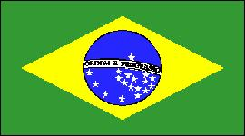

Brasil
|  |  |
Información general
Nombre oficial: República Federativa de Brasil
Área: 8 511 996 km²
Costas: 7 491 km
División política: 26 estados y el distrito federal de la capital
Estado Capital
- Acre Rio Branco
- Alagoas Maceió
- Amapá Macapá
- Amazonas Manaus
- Bahía Salvador
- Ceará Fortaleza
- Espírito Santo Vitória
- Goiás Goiânia
- Maranhão São Luis
- Mato Grosso Cuiabá
- Mato Grosso Campo Grande do Sul
- Minas Gerais Belo Horizonte
- Pará Belém
- Paraiba João Pessoa
- Paraná Curitiba
- Pernambuco Recife
- Piauí Teresina
- Rio de Janeiro Rio de Janeiro
- Rio Grande do Norte Natal
- Rio Grande do Sul Pôrto Alegre
- Rondônia Pôrto Velho
- Roraima Boa Vista
- Santa Catarina Florianópolis
- São Paulo São Paulo
- Sergipe Aracaiú
- Tocantins Miracema de Tocantins
- Distrito Federal Brasilia
Unidad monetaria: Real del Brasil
1 Real del Brasil = 100 centavos
Idiomas: Portugués (oficial); algunas comunidades de origen extranjero hablan también alemán, francés, inglés, italiano, español, japonés, ruso, árabe, polaco, chino y unas 150 lenguas menores, entre ellas numerosas habladas por los pueblos indios
Fiesta nacional: 7 de septiembre, Día de la Independencia
Gentilicio: Brasileño
Hora oficial: GMT Islas del Atlántico -2 horas (normal/verano). Este, zona costera -3 (normal), -2 (verano); Manaos -4 (normal), -3 (verano), Acre .5 (normal), -4 (verano).
Miembro de: ONU, OEA, ALADI
Curiosidades
- Brasil es en extensión el quinto país del mundo.
- Con un territorio tan extenso como E.U., Brasil tiene fronteras con diez países de América del Sur.
- El sistema fluvial de Brasil es uno de los más extensos de la Tierra. El Amazonas es el río más caudaloso del mundo y Bananal en el río Araguia (afluente del Tocantins) es la mayor isla fluvial del mundo.
- La Cumbre de la Tierra celebrada en Brasil en 1992 y con la asistencia de 117 jefes de estado sirvió para analizar importantes problemas ecológicos.
- En las calles de Brasil se estiman que viven como indigentes entre 2 y 8 millones de niños. Desde 1988 han sido asesinados más de 5 000 de ellos.
Información adicional en Internet.
Perfil Ecónomico
Perfil Demográfico
Población: 186.583.395 hab.
Densidad de población: 21 hab/km²
Con más de 180 millones de habitantes Brasil es después de Indonesia el quinto país con mayor población del mundo.
Sao Paulo es después de Tokio la segunda área metropolitana más poblada del mundo.
Fuente: http://www.ibge.gov.br/
Perfil Cultural
Alfabetismo: 85 %
Religión:
- Católicos: 82,6%
- Protestantes: 11,3%
- Espiritistas: 2,5%
- No religiosos: 2,5%
- Otros: 1,1%
Algunas figuras notables:
- Jorge Amado (1912 - 2001). Novelista
- Antonio de Castro Alves (1847-1871). Poeta
- Lucio Costa (1902).Arquitecto
- Emilio di Cavalcanti (1897).Pintor
- Camargo Guarnieri (1907).Compositor y director de orquesta
- Antonio Francisco de Lisboa (1730-1814). Escultor y arquitecto
- Joaquín M. Machado de Assís (1839-1908). Novelista y poeta
- Oscar Niemeyer (1907). Arquitecto
- Cándido Portinari (1903-1962). Pintor
- Heitor Villa-Lobos (1887-1959). Compositor y director de orquesta
- Edison Arante do Nascimento (Pelé) (1940).
Lugares declarados patrimonio mundial por la UNESCO
- Misiones jesuíticas guaraníes (Ruinas de Sao Miguel das Missoes).
- Parque Nacional de la Sierra de Capivara.
- Olinda (Centro histórico).
Sistema de Gobierno
Constitución vigente: 5 de octubre de 1988
Sistema ejecutivo:
Presidente (elegido por votación directa para un término de cuatro años), Vicepresidente y gabinete.
Sistema legislativo: Senado Federal (tres miembros por cada estado, elegidos para un término de ocho años) y Cámara de Diputados (503 miembros, elegidos para cuatro años).
Sistema judicial: Tribunal Supremo Federal (once miembros vitalicios, nombrados por el presidente con la aprobación del Senado); Tribunal Federal de Apelaciones; Tribunal de Cuentas; jueces, tribunales militares, electorales y del trabajo.
Gobierno subdivisional: Los estados son autónomos, tienen constitución propia, gobernador y cámara legislativa.
Aproximación histórica
Brasil es la mayor de las naciones latinoamericanas. Su extensión a nivel mundial es sólo sobrepasada por Rusia, Estados Unidos, China y Canadá. Brasil ocupa la mitad de Sudamérica y dentro de sus fronteras se encuentran regiones y pueblos de las más diversas condiciones, origen y nivel de desarrollo. Limita por el norte con cuatro países: Venezuela, Guyana, Surinam y la Guayana Francesa, con Colombia por el noroeste, con Perú y Bolivia por el oeste, con Paraguay y Argentina, por el sudoeste y con Uruguay por el sur.
Aunque Vicente Yañez Pinzón, desviado por una tormenta, arribó al cabo de san Agustín, el 26 de Enero de 1500, se reconoce como descubridor del Brasil, al portugués Pedro Alvarez de Cabral que ese mismo año llegó a las costas de Bahía. La colonización portuguesa fue eminentemente costera permaneciendo la región prácticamente inexplorada. En 1815 Brasil pasó a formar parte del reino de Don Juan VI de Portugal, cuyo hijo Don Pedro fue nombrado regente del Brasil en 1821. Brasil se declaró independiente de Portugal en 1822, en que Pedro I se proclama emperador. Las ideas republicanas se iban expandiendo por el Brasil desde el siglo XVIII y finalmente se decreta la República en 1889.
El sistema fluvial de Brasil es uno de los más extensos de la Tierra. El río Amazonas, con una extensión de 6 695 km atraviesa Brasil de oeste a este. La región amazónica, con grandes selvas, se encuentra al norte. Hacia el nordeste se encuentran zonas semidesérticas. La gran producción agrícola se concentra hacia el sur. Brasil no es montañoso y apenas un 3 % de su territorio está a más de 900 metros sobre el nivel del mar. Aunque casi todo Brasil está dentro de la zona tórrida, hay gran variedad de climas, debido a los vientos, la altitud, las lluvias, la distancia al mar y otros factores. La inmensa región amazónica es húmeda y cálida. El nordeste es caliente y seco.
En el este el clima varía según la altura: las costas son húmedas, pero la temperatura no es excesiva.
La mayor parte de la población brasileña se encuentra cerca del litoral. La población urbana representa cerca del 70 % del total y se concentra en grandes ciudades como Sao Paulo, Río de Janeiro, Belo Horizonte y Recife.
Brasil se considera uno de los países con mayor variedad y cantidad de recursos minerales en el mundo. El desarrollo industrial es de gran vitalidad en los centros urbanos.
Uno de los más significativos proyectos de urbanismo del siglo dio nacimiento a Brasilia, la capital, inaugurada en 1960 y que agrupa edificaciones de gran belleza.
El folklore brasileño es muy rico y variado. Los carnavales cariocas han difundido en todo el mundo el contagioso ritmo de la samba.
«-- ir al comienzo
«-- regresar